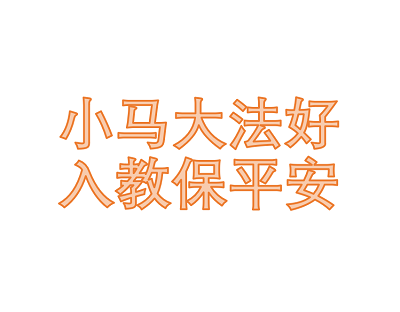

小蝶（英文：Fluttershy）是一只雌性天马，也是《我的小马驹：友谊就是魔法》中的主要角色之一。她住在无尽之森附近的一间小木屋，职业是动物护理员。她最突显的宠物是天使兔。小蝶在在谐律精华中代表着“善良元素”。
劳伦·浮士德最初是从她的儿时玩具—— G1陆马Posey[5]获得创造小蝶的灵感。起初，劳伦发布的小蝶最初设计也被称为Posey。她粉色与蓝绿色的蝴蝶可爱标记类似于G2小马Sky Skimmer。 小蝶的名字继承于上一代一匹爱好摄影的陆马的名字。在The Art of Equestria中有提到一些劳伦曾打算给她取的名字，如“Summer Azure （盛夏蔚蓝）”、“Spring Blossoms”、“Petalwing”和“Meadowbrook”。[6]此外，上述最后一个名字也相同于一匹 Earth pony的名字，并在劳伦离开节目策划后成了在第五季初演的 The Cutie Map - Part 1 和 The Cutie Map - Part 2 中一只unicorn的名字。 The Stare的灵感源于劳伦妈妈的某个常用绝招。
 The Cutie Mark Chronicles 一集中提到了 小蝶 的过去。她与 Rainbow Dash 一样来自 Cloudsdale。小时候，她不擅长飞行，常被在Sonic Rainboom中嘲笑 Rainbow Dash 的Pegasi挖苦。他们还给她取了个外号：“Klutzershy”。她与大多数同龄幼驹相比显得更高，更瘦削。她与 Plaid Stripes 、 “Pearly Whites”、"Thunderstruck"、稍后出场的幼驹Applejack、稍后出场的Derpy以及Crystal Hoof等小马相似。此外，她还有着比其他小马稍大的翅膀。Rainbow Dash为了捍卫她而向恶霸们比赛飞行。当比赛开始时，参赛者不小心撞到了 小蝶 使她从云上掉下了地面。对她而言，那是一个从未到过，也从未见过的世界。她在将要撞到地面上时被一大群经过的蝴蝶所救。 由于初次看到动物和绿色植物，小蝶 被这美丽的情景触动而唱了首歌。不久后，Rainbow Dash 的 sonic rainboom 把 小蝶 身边的动物吓得躲了起来。小蝶 在温柔地安抚受惊的动物并发现自己在与动物交流方面极具天赋后得到了自己的可爱标记。这象征着她与动物的特殊联系。 Green Isn't Your Color 一集讲述了 Rarity 与 小蝶 之间的友谊关系（Rarity声称自己是小蝶最好的朋友）。她们俩有个共同点，那就是每周都会在 Ponyville 的 day spa交谈、 一起共度时光。Rarity 喜欢做全套护理，她会将整张脸敷上泥巴，并放两片黄瓜放在眼睛上；而 小蝶 则比较保守，她温柔地拒绝了pony-pedi并只在双颊敷了一小点泥巴。 该集中，托一顶帽子的福，Rarity 得到了 Photo Finish 的关注。身为一名时装设计师，Rarity 希望借此提高她的名声，于是请 小蝶 当她的模特儿，并说她优雅的个性会给 Photo Finish 留下好印象。小蝶 最初犹豫着要不要答应，但在 Rarity 不断地拜托下最终同意了。在一番准备之后， Rarity 和 小蝶 通过了 Photo Finish 的面试，并定好下次的约定地点，但在这次面试中 小蝶 成为了 Photo Finish 要捧红的明星，并在接下来的一些场景中相当不情愿地参与各类摄影与时装秀任务。这一集中，小蝶 默默地忍受她收到来自她的粉丝的疯狂追捧。 小蝶 实际上非常不满于作为 Photo Finish的模特这一工作所带来的繁忙与不安，只因 Rarity 说过别让 Photo Finish 失望而默默忍受。然而她并不知道，其实 Rarity 对她的出名心怀嫉妒。她不想让 Rarity 失望，但也不想继续忍气吞声，于是向 Twilight Sparkle 诉苦。Twilight 建议帮她搞砸下次演出，当表演开始后，不知情的 Rarity 看到 小蝶 的演出濒临失败，反而帮助 小蝶 圆场。最后 Rarity 知晓了 小蝶 的意愿，发现彼此都互相隐瞒了心底话，并因此搞出闹剧。她们最终学习了新道理并加深了彼此的友谊。